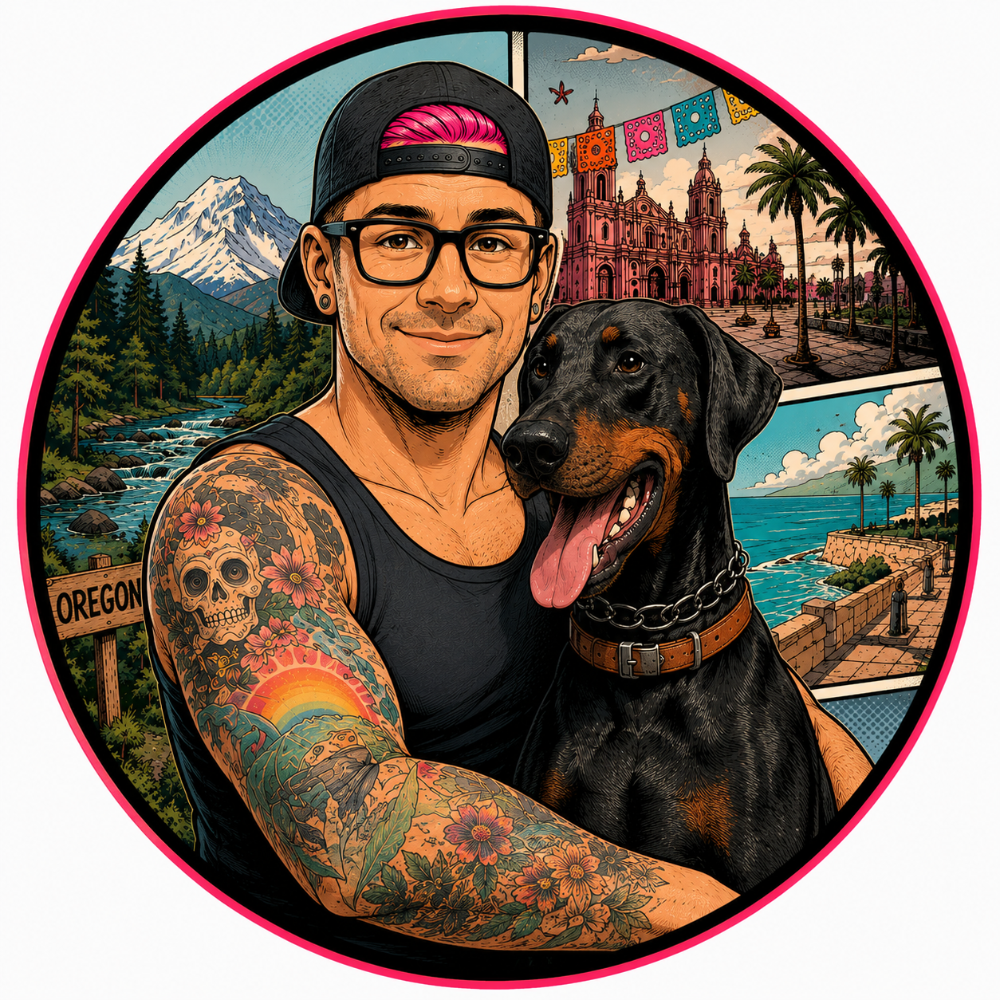

Useful
Leave having accomplished something practical: a clearer document, an organized spreadsheet, or a task you can now do yourself.

A volunteer community program
Practical technology education for people who don’t normally have access to expensive training.
Hands-on learning for work, small business, and everyday life. Beginners welcome. Questions encouraged.
Our mission
Technology is changing quickly. People with money, consultants, or large employers often get help learning it. Señor Rosa Digital Literacy exists to make that practical access available to everyone else too.
This is a volunteer community program: time and knowledge shared to help people use modern technology confidently and safely. We work to keep workshops free or very low cost, with any fees and required tools explained up front.
Leave having accomplished something practical: a clearer document, an organized spreadsheet, or a task you can now do yourself.
Free or very low-cost learning, explained in plain language. You don’t need technical experience, an employer’s training budget, or the right connections.
Learn about scams, privacy, passwords and multifactor authentication (MFA), identity protection, and when not to trust AI—including confident answers that are made up, called hallucinations.
Current program: Practical AI
The Practical AI Workshop is our first program. We use everyday business tasks to practice working with AI: watch a demonstration, ask questions, then try it yourself. No technical background needed.
We start with safe sample material, then apply the same patterns to working copies from your business or a task you care about. You’re welcome to keep using the sample files.
Polish a rough invoice, checklist, or customer document and make it reusable.
Turn receipt photos and public information into organized data and next actions.
Improve website files with AI and use Netlify to put them online.
Plan clear fields and a workflow that makes responses easier to use.
Make safe working copies and give AI reliable business context.
Turn one successful task into instructions you can use again.
“The goal is not to become a software engineer in three hours. It is to leave more capable than you arrived.”
Who it’s for
Small-business owners, workers, community members, veterans, immigrant communities, nonprofit staff, people starting side businesses, and older adults are all welcome—as is anyone who wants to feel more confident with modern technology.
We especially want to reach people who don’t get technology training through an employer, wealth, consultants, or professional networks. These are examples of who we hope to serve, not an eligibility checklist.
No income test. No need to prove disadvantage.
Bring your questions and start from where you are.
What we teach
Practical AI is the starting point. Our wider digital-literacy work focuses on skills that help at work, in a small business, and at home.
Ask clear questions, give useful context, check answers, and recognize when AI is the wrong tool.
Recognize scams, protect your identity and private information, and understand strong passwords and extra sign-in protection.
Use documents, forms, simple websites, and repeatable processes to support the work you already do.
Organize information, work with receipts and lists, and check the numbers before making decisions.
Find, save, organize, and share files. Understand working copies, links, accounts, and who can see your information.
Find useful information, check sources, and write clear messages for customers, coworkers, or everyday needs.
For community hosts
Invite Señor Rosa to volunteer a workshop for your community. Churches, nonprofits, community organizations, veteran groups, business groups, libraries, neighborhood organizations, and similar groups are welcome to get in touch.
Tell us who you bring together and what they’d like to learn. We can talk through a practical topic, the space and equipment available, and how to keep participation free or very low cost.
Share a little about your group, your location, and any dates you have in mind. Instructional time is volunteered; we’ll discuss any room or tool costs together.
Host a WorkshopOr email info@senorrosa.com
Past workshop · Materials and preparation
Materials from the past workshop are still available on the training page. This pilot uses the accounts below; safe sample files are provided, so you don’t need to own a business or bring your own data.
Bring useful working copies.
Logos, branding, photos, documents, spreadsheets, examples, or non-sensitive data can make the workshop more relevant. Remove passwords, payment data, and private customer or employee information. Sample materials are fine too.
Past workshop · Event details
A maximum of 10 attendees means room to ask questions, get unstuck, and work on something that matters to you.
Registration closed
The Practical AI workshop on September 26, 2026 is over. Registration and payment are no longer available.
Interested in training for your group? Get in touch to discuss bringing a workshop to your community, business, or organization.